NYC has a sustained, domestic-violence-driven assault crisis. The city's response is not scaling to meet it.
Felony assault is rising at multiples of the national rate. The story sits inside a single sub-category that the city's reporting framework hides. Here's what the data show, why the city has not responded, and what to do.
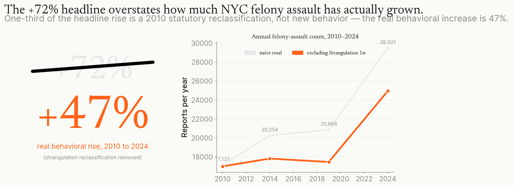
In brief
New York City (NYC) has a sustained, domestic-violence-driven assault crisis. The city's response is not scaling to meet it.
Felony assault is NYC's largest violent-felony category. Domestic violence (DV) is the dominant driver of its rise. Between 2017 and 2024, DV-related felony assault grew about 73%, nearly twice the pace of other felony assault. Roughly 39% of all NYC felony assault involves people in the same household, which works out to about 11,500 of the 29,501 cases reported in 2024. The pattern is not part of a national trend. NYC's 47% behavioral rise from 2010 to 2024 sits well above the Federal Bureau of Investigation (FBI) national rate, which has been essentially flat over the same period, and well above the Council on Criminal Justice (CCJ) 24-city average of about 4% since 2019.
Two things stop the city from acting on this. First, the city's standard reporting framework hides the structural rise. The headline number NYC's reporting would produce, comparing 2024 to 2010, is +72% in felony-assault counts. About 35 percentage points of that growth come from a 2010 statutory change rather than from new behavior: New York State created a new felony class called first-degree strangulation (codified at New York Penal Law section 121.13). Acts that had previously been charged as a misdemeanor or as Assault 2nd were now charged as Strangulation 1st, generating new felony counts without a behavioral change. Strip the reclassification out and the underlying behavioral rise is about 47%. NYC's standard reporting cadence, monthly and annual against the prior year, also hides the multi-year trend. October 2024 felony assault was down 1.9% versus October 2023. The same year ended up 5.8% versus 2023. Both numbers come from NYPD; both are accurate. The divergence is what choosing one window over another can do to the story.
The second thing keeping the city from acting: real spending on DV prevention has not moved. The Human Resources Administration's "Domestic Violence Services" program area grew about 28% nominally from fiscal year (FY) 2017 to FY24, almost exactly tracking inflation. In real terms, spending is flat. Over the same period, DV-related felony assault rose about 73%. Combining those two figures, real spending per DV-related case fell about 42%. NYC City Council requested expansions for DV microgrants, legal services, and the HOME+ permanent-supportive-housing program in three consecutive budget cycles; each request was zeroed out in the Mayor's Executive Budget for FY24, FY25, and FY26.
The recommendation is a three-part package, ordered by political cost and evidence strength.
- Operationalize at scale the $650M Bridge to Home and supportive-housing pipeline that Mayor Adams announced in January 2025 as part of the Care, Community, Action plan. Today's capacity, about 100 Bridge to Home beds plus 900 Safe Haven beds, covers roughly 5% of the announced 2,000-person target. Of all the levers in this memo, supportive housing has the strongest evidence for reducing the population-level conditions that produce DV-driven assault: stable housing keeps survivors from being trapped with abusers and gives clinical stability to the people most likely to escalate.
- Expand the Behavioral Health Emergency Assistance Response Division (B-HEARD), NYC's program for sending non-police EMS-led teams to mental-health 911 calls, to 24-hour operations. Implement the cause-tracking that the Comptroller's audit recommended. B-HEARD operates in 31 of NYC's 78 precincts and runs roughly 8 a.m. to 1 a.m. The 2024 Comptroller audit found that 35% of eligible in-hours calls did not get a B-HEARD team and explicitly did not track why. About 14,200 separate overnight calls fall outside the program's operating hours by design.
- Run a pilot in four to six precincts of two domestic-violence-specific interventions: a Lethality Assessment Program (LAP), a structured 11-question screen that police administer to survivors at the scene of a DV incident, and an Offender-Focused Domestic Violence Initiative (OFDVI), modeled on the High Point, North Carolina program. Build in survivor-protection safeguards (interpreter access, an immigration-enforcement firewall, accessibility for Deaf and disabled survivors), reserve at least 30% of the implementation budget for culturally-specific DV organizations like Sakhi, Womankind, the Violence Intervention Program, and the Anti-Violence Project, and tie this third recommendation to a sunset clause that ends the pilot automatically if it does not hit a pre-set target after 24 to 36 months. The sunset is specific to recommendation three; it does not apply to recommendations one and two.
Pilot annual cost is roughly $6 to $15M, about 0.3% of NYC's $4.22B FY26 projected budget gap. Plausible funding sources include reallocation from the NYPD operating budget (politically contentious), Mayor's Office of Criminal Justice (MOCJ) discretionary funds, federal Department of Justice (DOJ) Office on Violence Against Women grants, or a philanthropic match.
Estimating the long-run savings is difficult. The pilot would reduce demand on city-funded services such as emergency-department visits, jail bed-days, homeless-shelter use, and Administration for Children's Services investigations. A reasonable directional estimate places those city-borne savings somewhere between about $5M and $35M per year. The wide range comes from real methodology issues: city services have both fixed and variable costs, so reducing demand by, say, ten percent does not reduce city spending by ten percent; the city still pays for staff, facilities, and infrastructure even if fewer people use the service. And not all the savings flow to NYC. Some accrue to state Medicaid, federal Medicare, or private insurers. The pilot is plausibly cost-neutral to modestly cost-saving on NYC's books in the central case, but the range should be treated as illustrative, not as a budgetable forecast. The primary deliverable of the evaluation cycle is rigorous evidence about what works in NYC.
What the numbers show
NYC's public-safety conversation runs on aggregate metrics: NYPD's Index Crime, the seven-category Major Felony framework, the Mayor's monthly and annual announcements, and the NYPD CompStat 2.0 dashboard. The framing is almost always year-over-year, at the city level. Inside that conversation, four facts about felony assault stand out.
Felony assault is NYC's largest violent-felony category. In 2024 there were 29,501 felony-assault reports. That is roughly twice the next-largest violent felony (robbery at 16,567) and an order of magnitude more than rape (1,534) or murder (363). Grand Larceny at 47,808 is larger overall, but it is a property crime. Among the felonies that capture interpersonal harm, felony assault is by far the biggest. It is the highest felony-assault count NYC has recorded in the modern era.
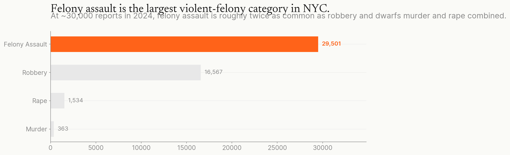
Domestic violence is the dominant driver of the rise. Vital City's analysis of NYPD data, citing the New York State Division of Criminal Justice Services (DCJS) DV feed, finds that domestic and elder assault rose about 73% from 2017 to 2024. Other felony assault grew about 40% over the same period. About 39% of NYC felony assault involves members of the same household, which works out to roughly 11,500 of the 29,501 cases in 2024. NYPD's public dataset does not contain a victim-relationship field, so the household-share figure is sourced from the DCJS feed.

Felony assault is the only violent-felony category showing a sustained rise. Indexed to 2017 equal to 1.0, felony assault has risen every year through 2024, ending at 1.46. Murder spiked during the pandemic and has since declined. Robbery and rape have stayed roughly flat. This is not a generalized public-safety deterioration. It is a specific, sustained pattern in felony assault, driven by DV inside the catch-all "Assault 2/1/Unclassified" sub-category.

The rise is not a national trend. The national aggravated-assault rate was roughly flat from 2010 to 2024 (FBI Uniform Crime Reporting: about 252 per 100,000 in 2010, about 256 per 100,000 in 2024 after the year's decline). The CCJ 24-city sample shows about 4% growth since 2019. The same sample posted a 4% year-over-year decline in 2024 while NYC ended the year up 5.8%. Peer cities are flattening or falling at exactly the moment NYC is still rising. Among individual peer cities, Los Angeles posted a roughly 10% year-over-year decline in 2024. Chicago was at multi-year highs through 2024 then down 16% in early 2025. Philadelphia's gun-related aggravated-assault counts fell sharply in 2024. Houston's 9% one-year rise is the high-end peer outlier. National Incident-Based Reporting System (NIBRS) data show the DV share of violent crime drifting from 25.6% in 2020 to 27.5% in 2024, a modest movement compared with NYC's 73% DV-related growth. Definitional differences (NY "felony assault" versus FBI "aggravated assault"), the FBI's transition from older Uniform Crime Reporting to NIBRS in 2021, and NYC's strangulation reclassification narrow the gap but do not close it.
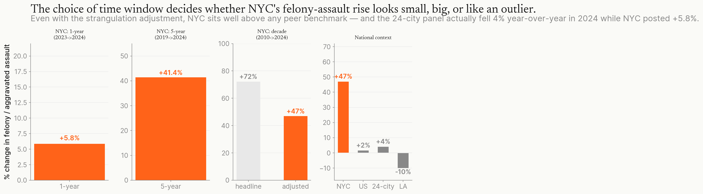
The rise is broadly distributed, not concentrated. Of NYC's 78 precincts, 76 saw growth in felony-assault counts between 2017 and 2024. The largest single precinct accounted for only about 6% of the citywide increase. The top 10 together accounted for roughly 36%. The lever is categorical, not geographic. A citywide intervention is more appropriate than a hot-spots strategy.
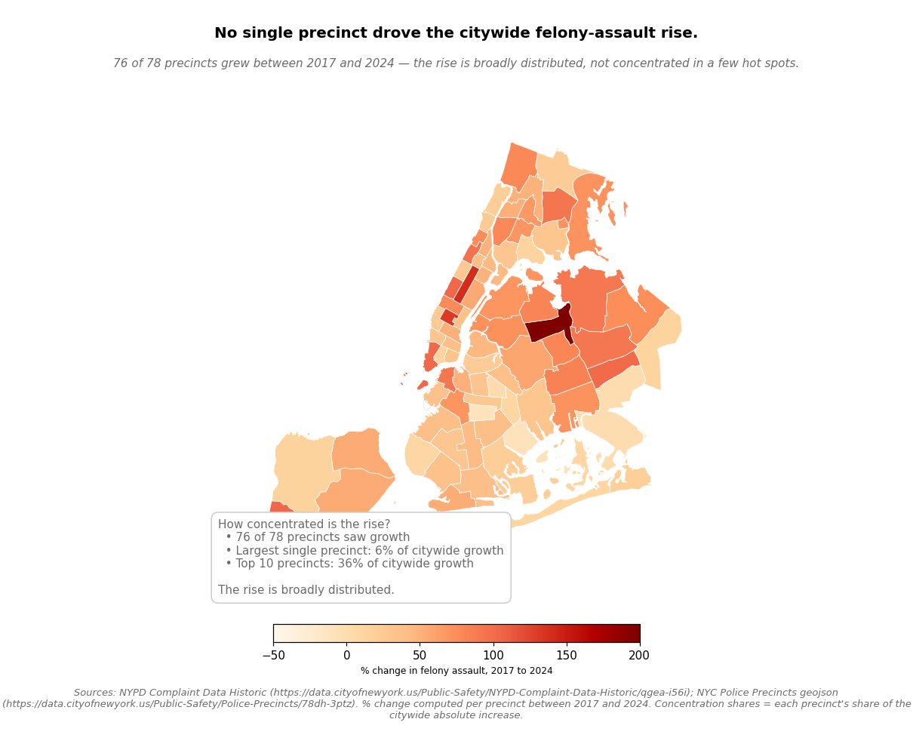
Why the city has not responded
Two things stop the city from acting at scale.
The reporting framework hides the structural rise. NYC's standard reporting compares the current month or year against the prior month or year. By that frame, the multi-year picture never appears. The longer-window picture is also distorted by a 2010 statutory change. The headline NYC's reporting would produce, comparing 2024 to 2010, is +72% in felony-assault counts. About 4,400 of those 12,364 added cases come from a brand-new felony class created in November 2010: first-degree strangulation, codified at New York Penal Law section 121.13. Strangulation acts existed before 2010 but were charged under Assault 2nd or as a misdemeanor. After 2010, the same conduct generates a Strangulation 1st felony count. About 35 percentage points of the +72% headline are this reclassification, not new behavior. The underlying behavioral rise, after stripping it out, is about 47%. The reclassification adjustment has been quantified by Vital City and the Brennan Center. No NYC government publication has named it. The same window problem appears in NYPD's reporting cadence. The October 2024 monthly press release reported felony assault at minus 1.9% versus October 2023. The full year ended at plus 5.8% versus 2023. Both numbers come from NYPD; both are accurate. They tell different stories because they cover different time windows.
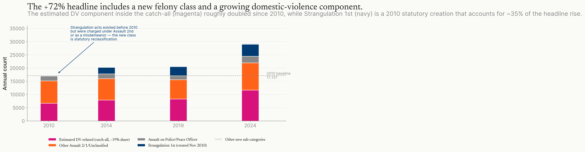
Investment in DV prevention has not kept pace with the rise. The Human Resources Administration's (HRA) "Domestic Violence Services" program area, which consolidates the Mayor's Office to End Gender-Based Violence (ENDGBV) operations, the Family Justice Centers, the Teen Relationship Abuse Prevention Program (Teen RAPP), microgrants, and DV shelter contracts, grew about 28% nominally from FY17 ($131.5M adopted) to FY24 ($168.5M adopted). Inflation, measured by the Consumer Price Index for Urban Consumers, was approximately 28% over the same window. In real terms, spending on DV services is flat. Over the same period, DV-related felony assault rose about 73%. Real spending per DV-related case therefore fell roughly 42%. The NYC City Council requested expansions in three consecutive budget cycles: $4.8M in DV Housing Stability Microgrants in the FY24 budget response, and $8.3M across DV legal services, the HOME+ permanent-supportive-housing program (NYC's program for placing DV survivors and other priority populations into permanent supportive units), and microgrants in FY26. Each was zeroed out in the Mayor's Executive Budget. Mayor Adams' January 2024 Women's Agenda announced $43M across all gender-equity programs, multi-year and multi-agency; the DV-specific share included survivor-security alarms at $186K. The transfer of the Office of Crime Victim Services to ENDGBV (about $23.6M baselined FY26 forward) is the largest real expansion of ENDGBV's portfolio in the period, but it is a function transfer from MOCJ, not new dedicated DV funding.
The combined effect is this. NYC's largest violent-crime category is rising sharply. The rise is driven by the most under-served population. The city's reporting choices and budget choices have not surfaced or responded to it.
What to do
The problem to solve
NYC has a sustained, DV-driven felony-assault rise that the city's reporting hides and that its budget has not responded to. The action question runs in two steps. First, which interventions actually target this driver in the criminology literature, and of those, which fit NYC well enough to deploy or pilot? Second, how should the city actually execute on the chosen levers, with what funding, and with what guardrails?
The space of possible action
Five categories of intervention plausibly address NYC's DV-driven assault rise. Each has a different evidence quality and a different fit with NYC.
Structural drivers (housing and mental-health capacity). Permanent supportive housing places people experiencing homelessness or housing instability into long-term subsidized units paired with on-site services like case management and behavioral-health care. The evidence base is the longest-running and highest-quality of any intervention in this memo: the Tsemberis Pathways-to-Housing randomized controlled trials and their replications, plus the Culhane cost-offset studies. The connection to DV is direct. Survivors who can leave abusers need somewhere stable to go, and people in mental-health crisis are less likely to escalate to violence when they have a stable home and clinical care. New York State lost more than 700 state-operated inpatient psychiatric beds between 2014 and 2021, according to a Manhattan Institute report. That figure is corroborated by the NY State Comptroller's March 2024 report, which used Office of Mental Health data to find that broader statewide inpatient psychiatric capacity fell by 990 beds, a 10.5% decline, between April 2014 and December 2023. The political cost of supportive-housing investment is among the lowest of any lever here, because supportive housing has cross-coalition support. Dollars are partially authorized through the announced $650M Bridge to Home plan.
Mobile crisis response (B-HEARD-style mental-health teams). When a 911 call involves someone in mental-health crisis, sending an EMS-led non-police team can de-escalate situations that would otherwise lead to use of force or unnecessary hospitalization. A 2024 working paper from the National Bureau of Economic Research, an academic research nonprofit (Shem-Tov 2024), found that mobile crisis teams divert about 5 to 8% of police calls. A 2025 study in the peer-reviewed psychiatric journal Psychiatric Services found that NYC's B-HEARD program specifically reduced unnecessary emergency-department transports. This is not a DV-specific intervention, but DV calls often involve mental-health crises, and a non-police response reduces the chance the call escalates to violence. The model has mid-quality evidence and is already established in NYC.
DV-specific policing and advocacy interventions. Three programs in this category have published evaluations.
The Lethality Assessment Program (LAP) is a structured 11-question screen that police administer to survivors at the scene of a DV incident. Questions cover the abuser's history of violence, access to weapons, threats to kill, and similar risk factors. Survivors whose answers indicate high homicide risk get connected by phone to a trained advocate before police leave. The advocate offers immediate safety planning and shelter referral. Maryland adopted LAP statewide between 2007 and 2013 in a staggered rollout, which let researchers compare jurisdictions that adopted earlier with those that adopted later. Koppa (2024, Journal of Economic Behavior & Organization) found a 35 to 45% reduction in female intimate-partner-homicide rate at the jurisdiction level. CrimeSolutions, the federal evidence-rating clearinghouse, classifies LAP as "Promising." The study is peer-reviewed but has not yet been independently replicated, and it is a single-state finding.
The Offender-Focused Domestic Violence Initiative (OFDVI) is modeled on the High Point, North Carolina program. Police, prosecutors, and community members hold structured call-in meetings with high-risk DV offenders. The offenders are warned about the consequences of repeat offending and offered services. Sechrist and Weil 2018 reported about a 20% reduction in intimate-partner DV calls in High Point, in a single-site before-after analysis with no contemporaneous comparator (meaning the study did not compare High Point to similar cities that did not adopt the program).
Mandatory arrest is a policy in which police arrest the primary aggressor at a DV scene rather than separating the parties. The original 1981-1982 Sherman and Berk Minneapolis Domestic Violence Experiment (a randomized controlled trial) showed 13% repeat-assault under arrest versus 26% under separation. Five-city replications produced mixed results. New York State already has a mandatory-arrest policy for felony DV, so this is not a new lever NYC could choose to add.
Community Violence Intervention (CVI) and credible-messenger work. This category includes NYC's Crisis Management System (CMS), which deploys credible-messenger outreach workers (often people with backgrounds in the communities they serve) to interrupt cycles of retaliatory violence. Comptroller Lander's 2024 report found a 21% reduction in shootings associated with CMS. The evidence is strong for shooting reduction. There is no published evaluation of CVI or credible-messenger programs targeting DV outcomes. Cure Violence Global's 50-plus international sites all target community or gun violence. Porting the model to DV would be a research bet, not a deployment bet.
Batterer-intervention programs. These are court-mandated group counseling programs for people convicted of DV offenses. The Duluth Model and cognitive-behavioral programs are the two main approaches; both require offenders to attend weekly sessions for 26 to 52 weeks as a condition of probation. Cheng and colleagues' 2021 meta-analysis found non-significant overall effects on re-offending. Not recommended.
A note on what to expect from any of these programs in NYC. None of these effect sizes will translate one-for-one. The criminology literature shows that interventions which worked in smaller jurisdictions tend to produce smaller effects when scaled to large cities. There are several reasons. Study quality matters; when researchers use rigorous matched comparisons, the apparent effect typically shrinks to about a quarter of what less-rigorous studies report (Braga and Weisburd 2019, Campbell systematic review). Demographics differ; the Maryland LAP study and the High Point OFDVI study were both conducted in jurisdictions whose population sizes, racial compositions, and policing structures differ substantially from NYC's. And implementation quality is hard to replicate. Plan for any NYC pilot to produce roughly a 10 to 15% rate change in pilot precincts, not the headline figures from source studies.
The chosen levers
Three programs, ordered by political cost and evidence strength.
Lever 1: Operationalize the $650M Bridge to Home pipeline at scale. This is the strongest evidence base in the memo, the lowest political cost, and the dollars are already authorized. Today's capacity (about 100 Bridge to Home beds and 900 Safe Haven beds) covers about 5% of the announced 2,000-person target. The action: double the Bridge to Home bed count over 18 months; set up 72-hour discharge-to-bed protocols from Bellevue and NYC Health and Hospitals psychiatric emergency departments; pair the housing investment with tenant legal services so eviction does not push survivors and people in crisis back into shelter; and prioritize survivor-flagged clients in intake.

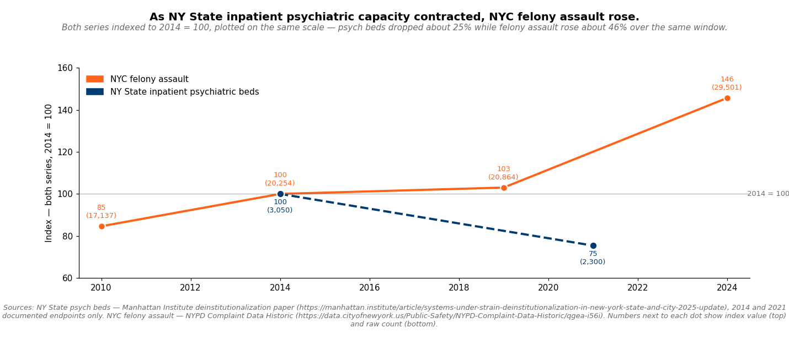
Lever 2: Expand B-HEARD to 24-hour operations and implement audit-recommended cause-tracking. B-HEARD operates in 31 of 78 precincts. The 2024 Comptroller audit found that 35% of in-hours eligible calls did not get a B-HEARD team and explicitly did not track why. About 14,200 overnight calls fall outside the program's scope. There are two distinct fixes. Extend operating hours to overnight, which adds about 14,000 reachable calls per year (a structural fix). Implement the audit-recommended cause-tracking, which is what would let the city size a fix to the in-hours gap (an operational fix). The combined cost is roughly $30 to $50M annually beyond the current B-HEARD budget, plus or minus 50%.
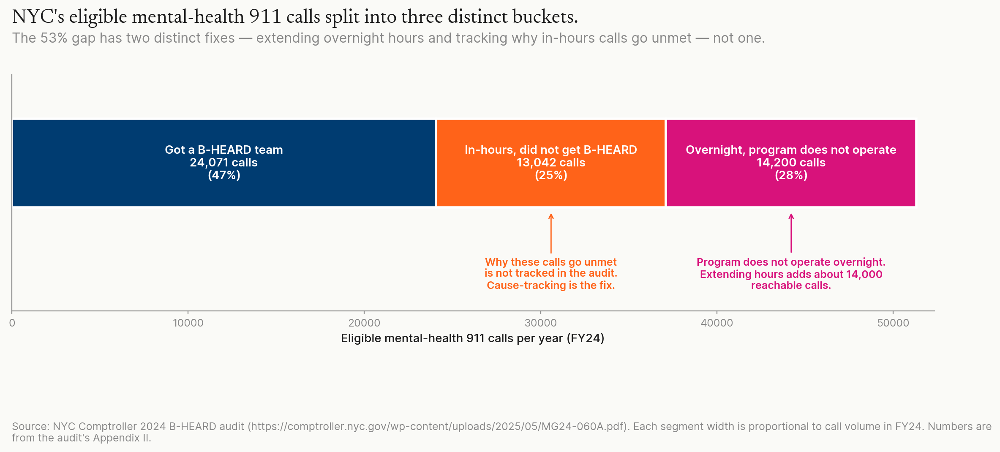
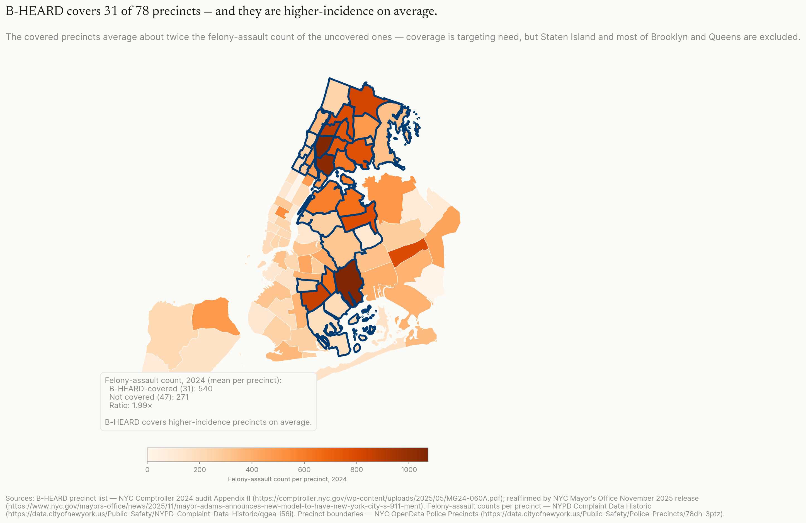
Lever 3: Pilot LAP and a NYC OFDVI program in four to six precincts. Among the DV-specific policing and advocacy interventions, LAP and OFDVI are the strongest-evidence options. They also carry implementation risks that the source studies did not measure. The pilot is meant to gather rigorous evidence about what works in NYC, not to deploy a known formula citywide.
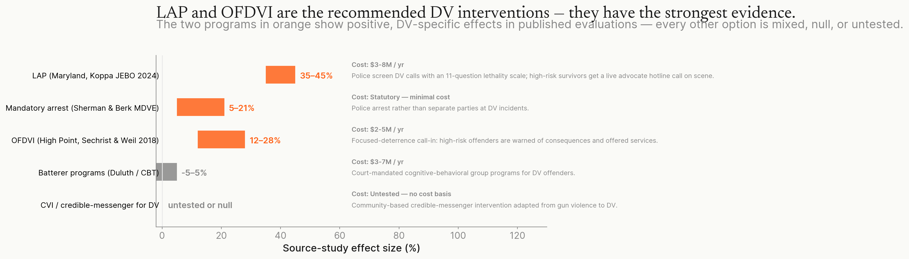
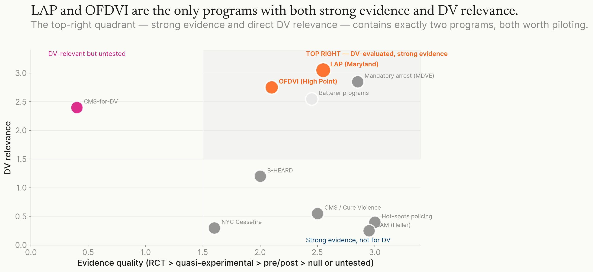
Three intervention categories are not in the recommendation. Community Violence Intervention adapted to DV is excluded because there is no published DV evaluation; the city would be running a research bet, not a deployment. Batterer-intervention programs are excluded because rigorous studies show null effects on re-offending. Hot-spots policing is excluded because it relies on a "place as driver" assumption (the idea that crime concentrates at specific street blocks) that does not fit DV; DV is driven by household relationships, not by place, and 76 of NYC's 78 precincts are showing growth, not a few hot blocks. A fuller note on hot-spots policing is in the appendix. Mandatory arrest is already in place in New York State, so it is not a lever NYC could choose to add.
How to run the pilot
Lever 3 carries the most risk and needs the most explicit design. The recommendations in this section apply specifically to Lever 3.
There are four implementation risks the source studies did not measure. The LAP score could become a gate for advocate referral rather than an enhancer; that is, advocates might end up only serving survivors who score "high danger," even though moderate-risk and low-risk survivors today have access to the same hotline and shelter pathways. OFDVI call-in lists are pre-conviction rosters administered by police, which carries the same civil-liberties profile as gang-database programs. Pilot precincts selected purely for high DV incidence overlap with neighborhoods that are already over-policed in NYC. And $5 to $15M of new annual spending against a $4.22B FY26 budget gap has to come from somewhere; without a specified source, it displaces other spending.
The pilot has to satisfy specific design conditions for the recommendation to hold up. These are binding conditions in the procurement contracts, not aspirational goals; if the city implements the pilot without them, the recommendation does not stand.
For LAP, the lethality score must be additive to existing self-identified survivor pathways, never a replacement for them. Moderate-risk and low-risk survivors must keep access to the same hotline, advocate, and shelter pathways they had before LAP arrived. Trained interpreters must be available. Language must be gender-inclusive. There must be an immigration-enforcement firewall, meaning LAP responses do not generate Immigration and Customs Enforcement referrals. The program must be accessible to Deaf and disabled survivors (TTY, on-scene American Sign Language interpreters, or equivalent post-call protocols).
For OFDVI, call-in inclusion must be limited to post-conviction history or judicially-confirmed restraining-order data, not arrest history alone. The roster must be publicly transparent, and inclusion must sunset; people roll off the list after a defined period rather than staying on indefinitely. An independent civil-liberties impact assessment must be commissioned in Phase 1, contracted to an entity outside NYPD and outside the National Network for Safe Communities (NNSC), the program developer; the Vera Institute or the New York University Center on Race, Inequality, and the Law are credible candidates.
On geography, the city should pick pilot precincts that include both high-DV-incidence neighborhoods and mixed-incidence neighborhoods. Picking only the highest-incidence precincts would maximize the pilot's chance of detecting an effect, but it would concentrate the program in already-over-policed areas. Mixing precincts costs some statistical power and builds political legitimacy.
On procurement, the implementation contracts must include a binding set-aside of at least 30% of the implementation budget for culturally-specific DV-survivor organizations such as Sakhi, Womankind, the Violence Intervention Program, the Anti-Violence Project, and Barrier Free Living, with the final list developed through ENDGBV consultation. The set-aside must be substantively binding by contract, not nominal.
The sunset clause is the most important design feature, and it deserves an explanation. NYC's track record on terminating pilots that do not work is poor. B-HEARD, the Crisis Management System, and the Subway Safety Surge all continued or expanded despite null or mixed evaluations. If the sunset for this pilot is just a promise, it will not bind. The pilot should be funded for one Phase-1 evaluation cycle of 24 to 36 months. The primary endpoint, change in DV-felony rate in matched comparison precincts, must be pre-registered before the pilot starts. Funding ends automatically if the endpoint is not met under transparent identification (Callaway-Sant'Anna staggered difference-in-differences with formal pretrend tests). The sunset language is binding through the procurement-contract structure itself, not through a policy aspiration.
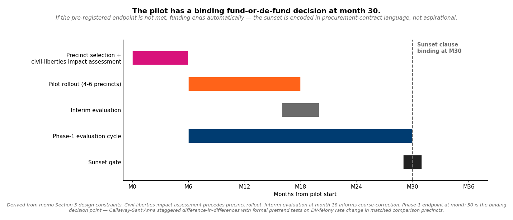
Pilot annual cost is roughly $3 to $8M for LAP, $2 to $5M for OFDVI, and $1 to $2M for evaluation, for a combined total of $6 to $15M per year, about 0.3% of NYC's $4.22B FY26 projected budget gap. Small in absolute terms, but it has to displace something. Plausible funding sources include reallocation from the NYPD operating budget (politically contentious), MOCJ discretionary funds, federal grant pass-throughs from the DOJ Office on Violence Against Women, and a philanthropic match (the NYC Fund for Public Health, the Robin Hood Foundation, or a similar partner).
Estimating the long-run savings is difficult. The pilot would reduce demand on city-funded services such as emergency-department visits, jail bed-days, homeless-shelter use, and Administration for Children's Services investigations. A reasonable directional estimate places those city-borne savings somewhere between about $5M and $35M per year. Two methodology issues make precision impossible. First, city services have both fixed and variable costs. Reducing demand by ten percent does not reduce city spending by ten percent, because the city still pays for staff, facilities, and infrastructure even if fewer people use the service. Second, not all the savings flow to NYC; federal Medicaid, state Medicaid, federal Medicare, and private insurers cover much of the medical and shelter costs. The pilot is plausibly cost-neutral to modestly cost-saving on NYC's books at the central case. The range should be treated as illustrative, not as a budgetable forecast.
Source-study effects (Koppa 35 to 45%, Sechrist and Weil 20%) almost certainly will not translate at face value. Plan for a 10 to 15% rate reduction in pilot precincts, with wide confidence intervals. Scale only what shows a statistically significant effect under transparent identification. The sunset clause is what makes that promise enforceable.
Sources
DV-specific evidence base
- Koppa, V. (2024). "Can information save lives? Effect of a victim-focused police intervention on intimate partner homicides." Journal of Economic Behavior & Organization 217, 756 to 782.
- National Institute of Justice: How Effective Are Lethality Assessment Programs for Addressing Intimate Partner Violence?
- CrimeSolutions: Lethality Assessment Program Oklahoma (Promising tier)
- Braga and Weisburd 2019: Campbell review on focused-deterrence transportability
- Tipton 2014: generalizability index framework
- Sechrist and Weil: High Point Offender-Focused Domestic Violence Initiative evaluation (PubMed)
- National Network for Safe Communities: Intimate Partner Violence Intervention
- Cheng et al. 2021: meta-analysis of batterer-intervention programs (PubMed)
- Sherman, L.W. and Berk, R.A. (1984). "The Specific Deterrent Effects of Arrest for Domestic Assault." American Sociological Review 49(2): 261 to 272.
- Cure Violence Global: international site list (no DV deployment)
- Brennan Center: 2025 Trends in Crime and Safety in New York City
- DCJS: Domestic Violence Data
- Peterson, Liu, Kresnow, Florence et al. 2018: Lifetime Economic Burden of IPV in the US (PMC)
NYC programs and evaluations
- NYC Comptroller: The Cure for Crisis (CMS evaluation, 21% shooting reduction)
- NYC Comptroller: B-HEARD audit (35% of eligible calls unserved; 31 of 78 precincts)
- NYC Comptroller: B-HEARD audit PDF (MG24-060A)
- Mayor's Office: November 2025 release on B-HEARD H+H operational transition
- THE CITY: B-HEARD operational reporting (team availability gap)
- NYC ENDGBV: Annual Reports and Fact Sheets
- John Jay REC: Cure Violence evaluation in S. Bronx and East NY
- Vital City: The State of Crime in NYC: 2025 and Beyond
- Gothamist: Domestic and elder abuse fuel rise in NYC felony assaults
- Manhattan Institute: Systems Under Strain: Deinstitutionalization in NY
- NY State Comptroller (Mar 2024): Mental Health: Inpatient Service Capacity (PDF)
- NY State Comptroller (Mar 2024): DiNapoli press release on declining psychiatric beds
- NYC Mayor's Office: Bridge to Home / $650M mental-health plan
- Mayor Adams and Commissioner Tisch announce 2024 crime statistics (January 2025)
- NYPD year-end 2024 enforcement report
- NYPD CompStat 2.0
NYC DV spending sources
- NYC Council FY25 Executive Plan HRA report (FY22 to FY25 data)
- NYC Council FY24 Executive Plan HRA report (FY21 to FY24 data)
- NYC Council FY18 Preliminary HRA report (FY15 to FY18 data)
- NYC Council press release on FY26 Executive Budget DV funding gaps (May 16, 2025)
- Mayor Adams $43M Gender Equity Plan (Jan 2024)
- ENDGBV Annual Fact Sheet on NYC OpenData
National crime data
- FBI 2024 Reported Crimes in the Nation
- FBI Crime Data Explorer
- FBI UCR 2010: Aggravated Assault
- Council on Criminal Justice: Crime Trends in U.S. Cities, Year-End 2024
- LAPD 2024 EOY Crime Stats (Mayor Bass)
- UChicago Crime Lab 2024 Chicago analysis
- BJS Criminal Victimization 2024
- FBI Domestic Relationships and Violent Crimes 2020 to 2024
Underlying data
Broader violence-reduction evidence base
Methodology
This memo started as Phase 0 evidence discovery and ended up as a published artifact. What follows is an honest walk through how it was built, aimed at a reader who's curious whether they should trust the analysis.
Data sources
The primary data is NYPD's Complaint Data Historic dataset (qgea-i56i, NYC OpenData), covering every NYPD-recorded complaint from 2006 through the most recent year. DV-specific figures come from the NY State DCJS DV feed via Vital City (NYPD's public dataset lacks a victim-relationship field). B-HEARD operational data comes from NYC Comptroller Lander's 2024 audit. Mental-health context comes from the Manhattan Institute's Systems Under Strain paper and the NY State Comptroller's March 2024 inpatient-capacity report. DV-spending data comes from NYC Council Finance Committee HRA reports, CPI-adjusted. National benchmarks come from FBI UCR and the Council on Criminal Justice 24-city year-end 2024 update. Program evidence comes from peer-reviewed criminology: Koppa 2024 (JEBO), Sechrist and Weil 2018 (NIJ), Sherman and Berk 1984 (ASR), Braga and Weisburd 2019 (Campbell), and Cheng et al. 2021.
The analytical pipeline
Python 3.11 with pandas, geopandas, and DuckDB. Raw data is hive-partitioned parquet under data/raw/; small aggregate parquets and CSVs (per-precinct counts, sub-category drill, indexed time series) are committed to the repo for reproducibility. Charts are rendered by scripts/render_sketches.py (matplotlib for static, Observable Plot at runtime for the two interactive charts).
Three rounds of adversarial review
The Phase 0 memo went through three rounds of adversarial critique before publication. Each round, a fresh reviewer attacked the memo with no continuity from prior rounds. Round 1: skeptical hiring manager (would they put this down on a first read?). Round 2: methodological peer reviewer (where is the methodology weak, where are the citations sloppy?). Round 3: hostile policy critic (what's the most damaging fair attack?). Critiques the memo could rebut became sharpenings; critiques that survived rebuttal became research questions for a separate, neutrally framed research agent. The recommendation visibly changed across the three rounds: from "deploy a domestic-violence Crisis Management System port" through "deploy LAP and OFDVI" to the current "lead with housing and B-HEARD; pilot LAP and OFDVI third with safeguards and a sunset." Each reframe traded confidence for defensibility.
Independent research and verification on load-bearing claims
Four high-stakes claims got research-then-verify agent pairs. The B-HEARD precinct count was corrected from "28" to the verified 31, sourced to the Comptroller audit's Appendix II. The "NYC vs national outlier" framing was independently confirmed against FBI UCR, the CCJ 24-city sample, and per-city year-end data from LA, Chicago, and Philadelphia. The DV-spending trajectory was reconstructed from NYC Council Finance Committee HRA reports with explicit CPI adjustment. The long-run cost-offset estimate was disputed in verification (unit costs sensitive to marginal-versus-average accounting; federal payer share isn't NYC-borne), so the memo flags those numbers as illustrative rather than estimable.
Source audit
Every cited URL was classified by reputability category (government, peer-reviewed academic, university research center, reputable news, reputable nonprofit, partisan think tank, Wikipedia, other). Load-bearing claims were independently fact-checked against their cited sources. Where a source was partisan-tilted (Manhattan Institute on deinstitutionalization), a primary government cite was paired alongside it (NY State Comptroller using OMH data). Where a citation was structurally one source reported three times (the DV split appearing in Vital City, Brennan Center, and Gothamist, all citing DCJS), the memo says so.
AI-tool transparency
This memo and the analysis behind it were built with the assistance of Claude Code, an Anthropic-built agentic coding tool. Claude Code drafted prose, ran statistical analyses through the project's Python stack, dispatched independent research and verification agents, and surfaced findings the author would not have caught alone. The author directs intent, makes every decision, edits every paragraph, and is solely responsible for the recommendation. The use of AI tools is named here, not hidden, because the methodology is part of the work.
Limits of the analysis
See the appendix's Limits of the data note. Briefly: NYPD does not publish a victim-relationship field, so the DV split is not directly reproducible from the NYPD dataset alone; the HRA "Domestic Violence Services" budget line conflates ENDGBV operations with DV shelter contracts; the long-run cost-offset estimate is illustrative, not estimable; and FBI Uniform Crime Reporting and NIBRS are not the same as NY State Penal Law definitions, so cross-jurisdiction comparisons require a methodological asterisk.
Reproducibility
The full source repository is on GitHub (link in footer). All aggregate parquet files and CSVs that drive the charts are committed. Raw NYPD data is regenerable from NYC OpenData with a free SODA application token. The memo, the chart-rendering scripts, the build script for this site, and the round-by-round adversarial critique transcripts are all in the repo.
Appendix
What New York City has already tried
| Program | Scope | Evidence | Verdict |
|---|---|---|---|
| Crisis Management System / Cure Violence | $86M, 29 precincts (shootings) | 21% reduction in shootings (Comptroller Lander 2024); 37 to 50% gun-injury reductions in S. Bronx and East NY (John Jay 2017). | Proven model for gun violence. CVI-for-DV has no published evaluation; do not port. |
| B-HEARD | 31 of 78 precincts; FY24: 14,900 calls | 35% of in-hours eligible calls unserved with untracked causes (Comptroller 2024 audit). Roughly 14,200 separate overnight eligible calls outside operating hours. 2025 Psychiatric Services study shows ED diversion. | Expand 24-hour operations and implement audit-recommended cause-tracking. |
| Subway Safety Surge / NYPD CRT | Plus 1,000 officers per day; CRT 18 officers | No published causal evaluation. NYPD Inspector General (2024) flagged operational issues. | Tactical, not evaluated. |
| NYC Ceasefire (Group Violence Intervention) | Brooklyn, Bronx, Staten Island, NNSC partnership | Boston Ceasefire achieved 63 to 68% reduction in youth gun violence; NYC-specific evaluation thin. | Strong elsewhere. NYC scope is too small to evaluate, but NNSC's NYC infrastructure is the natural launchpad for an OFDVI. |
| Bridge to Home / supportive housing | 100 beds plus 900 Safe Haven; $650M plan announced January 2025 | Too new for outcome data. | Scale up, fast. |
| ENDGBV / family justice centers / DV hotlines | Citywide service network; spending flat in real terms FY17 to FY24 | Fragmented; no precinct-targeted outcome evaluation; no LAP or focused-deterrence program. | The DV gap. The recommended LAP plus OFDVI fills it. |
| Lethality Assessment Program (LAP) | Not deployed at NYC scale | Koppa 2024 staggered-DiD on the Maryland LAP rollout: 35 to 45% reduction in female intimate-partner-homicide rate, jurisdiction-level. CrimeSolutions rates LAP-Oklahoma "Promising." Quasi-experimental, not randomized. | Pilot in four to six high-incidence precincts with DiD evaluation built in. |
| High Point OFDVI / focused-deterrence for IPV | Not deployed in NYC | Sechrist and Weil 2018: single-jurisdiction before-after, about 20% IPDV-call/arrest reduction, no contemporaneous comparator. | Pilot via NNSC partnership with rigorous matched-comparison evaluation. Do not assume citywide deployment grade. |
Strength of supporting evidence
| Claim | Supported by | Strength |
|---|---|---|
| Felony assault has a real behavioral rise of about 40 to 47% from 2010 to 2024, after adjusting for reclassification. | Direct count from NYPD Complaint Data Historic; sub-category drill-down; research on additional reclassification streams. | Strong |
| Felony assault is the only violent-felony category showing a sustained rise (2017 to 2024). | Indexing of violent felonies to 2017 equal to 1.0 across 2017 to 2024. | Strong |
| 76 of 78 precincts saw felony-assault growth 2017 to 2024; top-1 precinct equals about 6% of citywide growth, top-10 about 36%. | Per-precinct decomposition. | Strong |
| The Mayor's "felony assault minus 1.9%" figure was the October 2024 monthly stat, not the year-end number. | Reconciled directly against NYPD's October 2024 press release. | Strong |
| Roughly 35% of the +72% headline is statutory creation (Strangulation 1st, NYPL section 121.13). | Sub-category drill-down across 2010 to 2024. | Strong |
| Domestic violence is the dominant felony-assault driver (about 73% DV growth versus about 40% other; about 39% of all NYC felony assault is household-related). | Vital City, Gothamist, and the Brennan Center each cite the same DCJS feed; corroboration is structurally one source reported three times. | Strong (single-source claim, three independent secondary citations) |
| The "35 to 45% LAP" figure comes from Koppa (JEBO 2024) staggered-DiD on Maryland (jurisdiction-level female-IPH rate), not from Messing's Oklahoma study. | Citation accuracy correction. | Strong (corrects a prior misattribution) |
| LAP, OFDVI, and CMS effect sizes come from quasi-experimental observational studies, not from RCTs. | Koppa 2024 staggered-DiD; Sechrist and Weil 2018 single-jurisdiction before-after; Comptroller 2024 Callaway-Sant'Anna DiD with visual-only parallel-trends. | Strong |
| Focused-deterrence transportability: matched-design effects are about 28% of non-matched-design effects. | Braga-Weisburd 2019 Campbell review. | Strong |
| The cited effect sizes use heterogeneous denominators, so citywide projection is arithmetically undefined without scope adjustment. | Per-effect denominator analysis. | Strong |
| CVI / credible-messenger work has no published evaluation against DV. | Cure Violence Global's 50 plus sites all target community / gun violence. | Strong |
| NYC felony-assault rise is an outlier, not part of a national trend. National rate roughly flat 2010 to 2024; CCJ 24-city average plus 4% since 2019; LA, Chicago, Philadelphia all moving in the opposite direction. | FBI UCR; CCJ Year-End 2024; LAPD 2024 EOY; UChicago Crime Lab 2024. | Strong (verified independently) |
| B-HEARD operates in 31 of NYC's 78 precincts, not 28. | Comptroller 2024 audit Appendix II; reaffirmed by Mayor's Office Nov 2025 release; corroborated by NYC IBO Jan 2026 brief. | Strong (verified) |
| NYC DV-services real spending is flat FY17 to FY24 while DV felony assault rose about 73%. Per-incident real spending fell about 42%. | NYC Council Finance Committee HRA reports; CPI-U inflation adjustment. | Strong (medium confidence on aggregation, given the HRA "DV Services" line conflates ENDGBV and DV shelters) |
| LAP and OFDVI piloted in NYC will produce about a 10 to 15% effect (post-attenuation). | Inference from source-study effects plus the Braga-Weisburd 2019 attenuation factor. | External-evidence projection; substantial uncertainty |
| Cost figures: $3 to $8M LAP pilot, $2 to $5M OFDVI pilot, $30 to $50M B-HEARD scaling, $650M housing already authorized. | Order-of-magnitude pilot estimates. | Rough estimates; plus or minus 50% uncertainty |
| NYC FY26 has a $4.22B projected budget gap. | Comptroller projection. | Strong |
| NYC's pilot-termination track record: located cases (B-HEARD, CMS, Patternizr, SCOUT) all continued or expanded despite mixed or null evaluations. | Open-records research. | Strong (informs sunset-clause design) |
| Plausible long-run NYC-borne cost offsets from LAP plus OFDVI pilots are in the $5 to $35M range. | Mechanism-by-mechanism build (avoided ED, incarceration, shelter, ACS). | Directional only. Verification disputed several unit-cost figures. Treat as illustrative, not estimable. |
Findings worth flagging
Findings discovered in research that materially changed the memo's recommendation or methodology.
- Community Violence Intervention has no published DV evaluation. Cure Violence Global's 50-plus international sites all target community or gun violence. An earlier draft of this memo proposed porting NYC's CMS architecture to DV; the research base does not support it. This finding caused the central recommendation to switch from "deploy DV-CMS" to "pilot LAP and OFDVI."
- NYC DV investment is flat in real terms while DV cases rose about 73%. Per-incident real spending fell about 42% from FY17 to FY24, and Council-requested DV expansions were zeroed in three consecutive Mayoral Executive Budgets. This is the second pillar of the Complication.
- NYC's pilot-termination track record is poor. Located cases (B-HEARD, CMS, Patternizr, SCOUT) all continued or expanded despite mixed, null, or absent evaluations. Load-bearing for the sunset clause: the kill-switch must be encoded in procurement-contract language with automatic de-funding triggers, or it will be politically unenforceable.
- The Maryland LAP figure is widely misattributed. The 35 to 45% female-IPH rate reduction comes from Koppa, Journal of Economic Behavior & Organization (2024), a peer-reviewed staggered-rollout DiD on Maryland's adoption, not from Messing's Oklahoma study (which has no homicide endpoint). The misattribution is common in policy summaries; the memo cites Koppa directly.
- Strangulation 1st reclassification accounts for about 35% of the +72% headline. The November 2010 New York Penal Law section 121.13 created a brand-new felony class that contributed about 4,400 of the 12,364 added cases between 2010 and 2024. The reclassification adjustment is what produces the +47% behavioral figure.
- NYC versus national outlier. NYC's reclass-adjusted +47% felony-assault rise sits well above any peer benchmark. National aggravated assault is roughly flat, the 24-city average is plus 4% since 2019, and LA, Chicago, Philadelphia all moved in the opposite direction in 2024. This strengthens the structural-driver framing: the rise is NYC-specific, not part of a national trend.
- B-HEARD count corrected to 31 of 78 precincts. The "28" figure that appears in some press summaries is not supported by any primary source. Comptroller audit Appendix II lists all 31 explicitly. The memo references the verified figure throughout.
Limits of the data
- Sub-category attribution within the catch-all
pd_cd 109(Assault 2/1/Unclassified). We cannot distinguish intimate-partner from street from transit assault at the level NYPD publishes. The 73% / 40% DV-versus-non-DV split comes from Vital City's deeper analysis of NYPD data; we cite it but did not re-derive it. - DV split corroboration is structurally one source. The Brennan Center's 2025 Trends report and Gothamist's reporting both cite the same DCJS feed Vital City uses. Three publications carry the figure; one underlying source produces it. If the DCJS feed has a methodology issue, three citations would all share it.
- DV-spending aggregation. The HRA "Domestic Violence Services" program area conflates ENDGBV operations with DV shelter operations. ENDGBV's standalone budget is not published as a clean line; the FY26 Adopted Schedule C requires ENDGBV to begin reporting its budget by program area precisely because the line is opaque. The "real spending is flat" finding therefore rests on a medium-confidence aggregation rather than a precise per-agency figure.
- Long-run cost-offset estimate is illustrative, not estimable. Verification flagged several unit-cost issues (incarceration $480K versus Comptroller $556K; ED $1,800 versus AHRQ $530 average; LAP 7% ED-reduction not from Messing). Use the directional read, not the dollar figures.
- National comparison. "Felony assault" (NY Penal Law) is not identical to FBI UCR "aggravated assault." The FBI's UCR-to-NIBRS transition (2021) introduces measurement breaks; many large cities did not report to NIBRS in 2022.
Why hot-spots policing is not in the recommendation
A note on the exclusion. Hot-spots policing concentrates police presence on specific street blocks, intersections, or small geographic areas where crime is observed to cluster. The strategy works for offenses driven by physical place (open-air drug markets, street robberies, gun-violence corners). The "place as driver" assumption does not fit DV. A 2024 Oxford study on domestic-abuse hot spots found that DV concentrates around households, not blocks; the spatial signature does not match what hot-spots strategies were designed to address. NYC's data confirms the same pattern at the precinct level. Of NYC's 78 precincts, 76 saw growth in felony-assault counts between 2017 and 2024. The largest single precinct accounts for only about 6% of the citywide increase, and the top 10 precincts together account for only about 36%. There is no concentrated set of places to target. A categorical lever is the appropriate fit; a geographic concentration strategy is not.